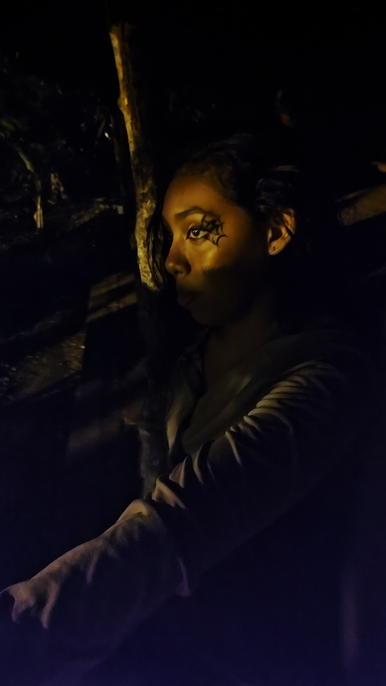
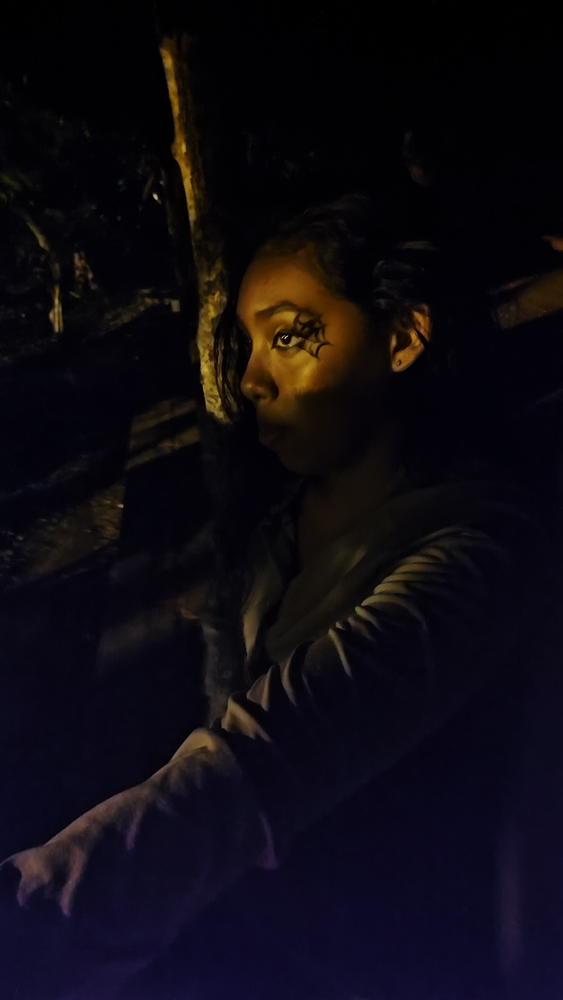
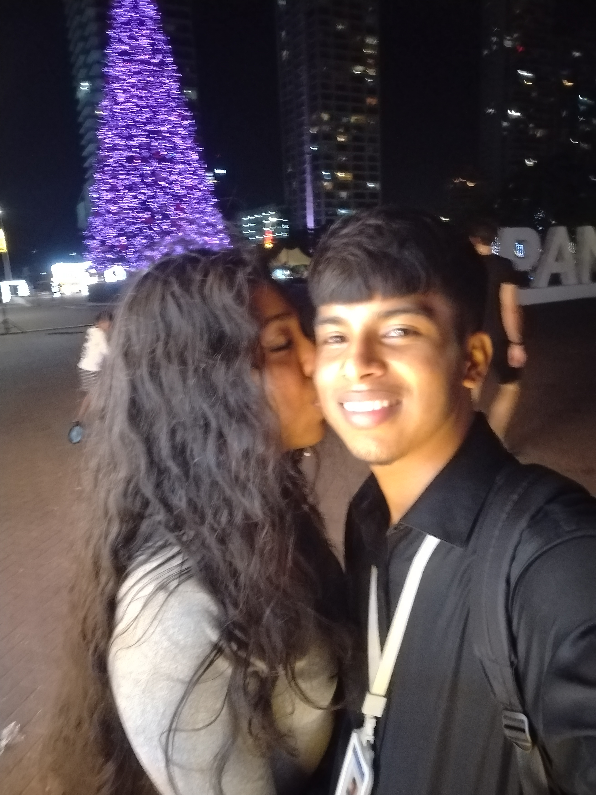
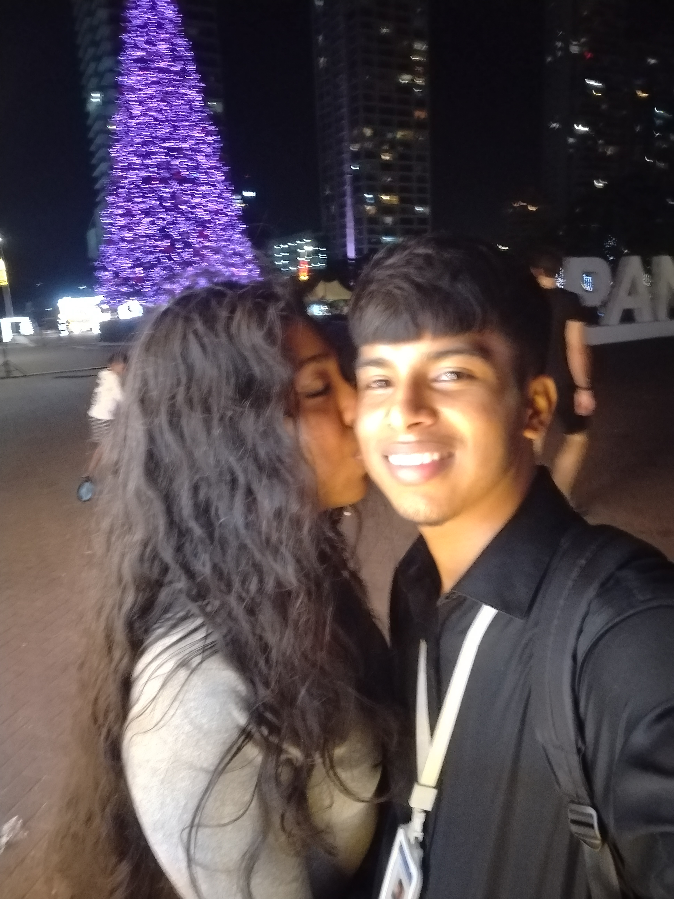
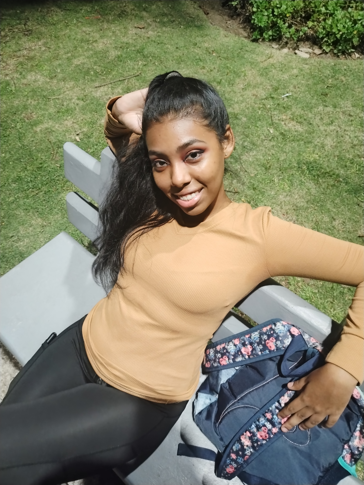
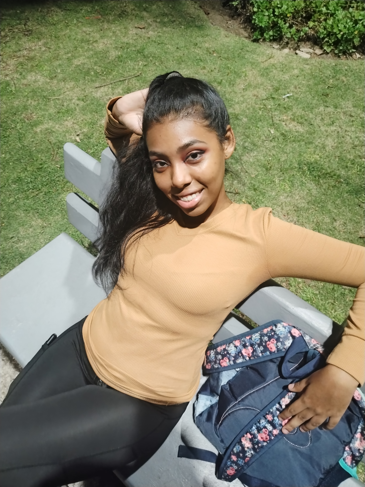
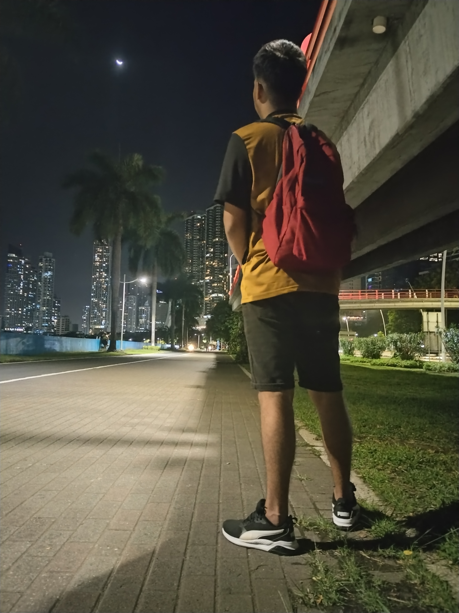
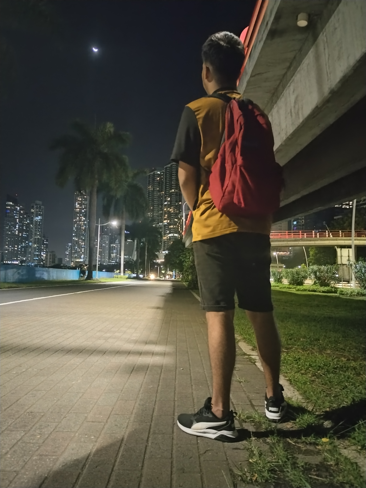

EL ENCUENTRO
Aquí comenzó nuestra historia, el 24 de mayo de 2022. Después de haber hablado virtualmente durante varios años, el destino quiso unirnos por primera vez en esta estación del metro. Ahí estabas tú, esperándome. Me sentía tan nervioso, pues era la primera vez que conocería a alguien así. Aún recuerdo que fue un curso lo que nos unió, y no me arrepiento de esa decisión, porque es actualmente a la persona que más amo.

PARADA DE AUTOBUS
Aquí nos veíamos todos los días para tomar el bus junto a tu mamá e ir al curso, recuerdo que antes solo habia una carpa. Esperábamos el Metrobús La Siesta o Pedregal, y si era Pedregal, hacíamos transbordo en la ZP Pedregal.
PRIMER BESO
Justo en esos puestos estábamos tú y yo. Nos besamos por primera vez mientras ibamos hacia el curso. Fue un momento especial que quedo grabado en mi memoria.

INADEH TOCUMEN
Cuántos momentos no vivimos juntos aquí. Desde compartir día a día hasta esos pequeños detalles, como cuando me llevabas comida. Aprecié mucho esos gestos. También recuerdo cuando nos regañaron por besarnos durante el break, jajaja. O aquellas veces en clase cuando te apretaba los muslos. Son tantas cosas, amor, y sobre todo porque este curso fue el que nos hizo coincidir.

PARADA INADEH
Aún recuerdo cuando veniamos a esperar el bus aquí, demoraba mucho en pasar. También recuerdo cuando te hacia escenas de celos y me iba por mi lado, jajaja.
ZP PEDREGAL
Aquí veniamos siempre a tomar el transbordo hacia San Miguelito, justo en esta puerta. Casualmente hoy 1 de Febrero soñe contigo donde me preguntabas: ¿Recuerdas en que puerta nos haciamos a esperar el bus? Hasta en mis sueños estas Tú.
ZP CERRO VIENTO
Aquí vivimos una hermosa historia. Recuerdo que me pediste que te acompañara a comprar ropa, y así lo hicimos. Al terminar, llegamos a esta Zona Paga y esperamos durante horas un bus, ya que había una huelga en el país y todo era un caos. Aquel día hablamos sobre la luna, y me contaste cómo cada uno de sus ciclos, de alguna manera, puede influir en ti. Al final, después de tantas horas de espera, logramos irnos.

TU CASA
Si mal no recuerdo, después de acompañarte a comprar, nos despedimos aquí. Recuerdo que tomaste un taxi, mientras yo me quedé esperando una chiva, ya que, debido a la huelga, la Zona Paga de Los Andes estaba cerrada. Fue entonces cuando empecé a escuchar a la gente decir que la calle hacia mi casa estaba bloqueada. Me preocupé y te lo comenté. Sin dudarlo, regresaste por mí y me ofreciste quedarme en tu casa, fue hermoso ver como te preocupaste por mi.

PICNIC
En este lugar fue nuestro primer y único picnic. Pasamos un tiempo increíble, nos tomamos varias fotos para capturar ese momento único. Recuerdo que, intercambiamos nuestras zapatillas. Apreciamos el atardecer, cuya luz dorada iluminaba el paisaje, y vimos un barco estilo pirata, que por cierto te gustó mucho. Fue un momento tan sencillo, pero tan bonito, que lo atesoro con mucho cariño.


ARBOL
Recuerdo que pasábamos por aquí de noche mientras andábamos en bicicleta. Nos deteníamos a contemplar la hermosa vista que ofrecía este majestuoso árbol. Hoy volví a verlo y me encontré con una imagen diferente. En ese momento, vino a mi mente la siguiente frase: "Procura no hacer leña del árbol que te dio sombra."

FAROL
En este farol, durante la noche, nos tomamos varias fotos que, por cierto, se han convertido en mis favoritas. La iluminación tenue y el ambiente tranquilo le dieron un toque especial a cada imagen, capturando no solo nuestro rostro, sino también la magia del momento.

MUSEO
Este hermoso árbol lo encontramos por casualidad, ya que solo intentábamos acortar camino. Aquí te tomé varias fotos, mi esperancita, capturando la majestuosidad de la naturaleza junto con la belleza única de la naturaleza humana que eres tú. Fue un hallazgo inesperado, pero perfecto, que convirtió un simple desvío en un recuerdo inolvidable.

PASILLO
Este pasillo también es parte de aquel árbol, un lugar sencillo pero con una belleza única que lo hace especial. Aquí también capturamos el momento en fotos, inmortalizando la magia de aquel día.

BODEGA ABANDONADA
Luego de salir del pasillo del árbol, comenzamos a buscar un lugar para sentarnos a comer los hot dogs, pero la lluvia nos tomó por sorpresa. Para refugiarnos, llegamos a esta bodega, donde nos tomamos varias fotos. Fue un momento inesperado, pero especial, porque incluso en lo simple, compartir contigo siempre lo hace todo más bonito.
 

CABAÑA
Luego de caminar sin descanso y mojarnos bajo la lluvia, finalmente llegamos a esta cabaña. ¿Quién diría que, a pesar del clima, estaríamos aquí disfrutando cada instante? Los planes eran otros, como andar en bicicleta, pero incluso así, la tarde y la noche a tu lado fueron maravillosas, con la lluvia añadiendo un toque mágico e inolvidable. Y entre todo lo vivido, la carta que hiciste con tus manos fue lo más lindo que conservo de ese día, un recuerdo que me llena de cariño y gratitud.

 

PHOTO PARADOR
En este lugar atesoramos muchos recuerdos. Curiosamente, hemos ido en dos diciembre, en plena temporada navideña, y en ambas ocasiones disfrutamos momentos especiales y creamos memorias inolvidables. Apreciamos el encendido del arbolito, convivimos y conversamos mucho, fortaleciendo aún más nuestro vínculo.


PARQUE URRACÁ
En el Parque Urracá vivimos un momento inolvidable. Caminamos entre las luces brillantes que adornaban cada rincón. Nos tomamos muchas fotos, capturando la magia de la noche y cada sonrisa compartida. Las decoraciones eran hermosas, llenas de colores y destellos que hacían que todo se sintiera aún más especial. Fue una velada llena de alegría, risas y complicidad, un recuerdo más que atesoro con cariño.

 

CINTA COSTERA
Ese día fuimos a patinar, aunque en realidad más tú que yo, porque aún no sé hacerlo. Ahí iba yo detrás de ti, riendo mientras recorríamos toda la Cinta Costera, mientras tú avanzabas con facilidad sobre los patines. Luego, me los puse... y fue un completo desastre, ¡jajaja! Aun así, fue un momento increíble que compartimos y que siempre recordaré. Por cierto, todavía me debes esa lección de patinaje, ¡No te olvides!

ASIENTO
En esta silla, nos sentamos después de comprar comida y comenzamos a hablar de todo un poco mientras comías. Fue un momento en el que me sentí tan bien, a pesar de que mi mundo se desmoronaba en ese instante. Tu risa y tu compañía hicieron que, por un momento, todo lo demás desapareciera, y solo existiera la paz de estar contigo.

EL INICIO
Este es el lugar, el preciso lugar donde todo comenzó. Aquel rincón del mundo que, sin imaginarlo, se convirtió en el inicio de este proyecto. Te conté que, al pasar por aquí, algo en mi interior se estremeció. Fue como si el tiempo se detuviera y mi mente se llenara de recuerdos: desde el mágico instante en que te conocí hasta cada uno de los momentos que hemos compartido. Recuerdo aquel día en que fuiste a verme jugar fútbol. Todo parecía normal hasta que el caos nos envolvió. Las huelgas, el gas pimienta, la gente corriendo sin rumbo… Solo podíamos huir. Y, entre la confusión, llegamos aquí, a este mismo lugar. Pero en medio de todo, algo brilló en la oscuridad: tú. Tu presencia lo cambió todo. No me sentí solo; me sentí a salvo, me sentí en casa. Aquí entendí que el destino tiene formas misteriosas de guiarnos. Porque, sin importar las circunstancias, si estamos juntos, todo cobra sentido. Gracias por darme paz y refugio donde yo era el que debia darlo.❤️
ASÍ COMO CADA UNO DE ESTOS MOMENTOS VIVIDOS,
HAY MUCHOS RECUERDOS QUE QUEDARON PLASMADOS EN EL TIEMPO,
LLENOS DE ALEGR√çA, AMOR Y COMPLICIDAD, FORMANDO PARTE DE NUESTRA HISTORIA. üíñ‚ú®
 



CADA FOTO REPRESENTA UN MOMENTO ESPECIAL VIVIDO JUNTO A TI.
Hice este sitio para que podamos recordar juntos cada momento especial, porque nuestra historia merece ser guardada de una forma única.üíñ Cada l√≠nea de c√≥digo, cada imagen y cada detalle fueron pensados con amor, porque no hay nada que disfrute más que hacer algo especial para ti...
Cada una de estas fotos representa un momento especial de nuestra historia. Algunas nos harán reír, otras nos traerán nostalgia, pero todas nos recordarán lo bonito que es estar juntos y todo lo que hemos vivido.✨ Nuestro amor es como este sitio web: construido poco a poco, con paciencia y dedicación, pero hecho para durar.
Cada uno de estos lugares que visit√© y captur√© para este proyecto me hizo revivir momentos a tu lado. Te ve√≠a en cada rinc√≥n, y no pude evitar que la nostalgia y las lágrimas me acompa√±aran mientras los fotografiaba. Este detalle es una parte de todo lo que siento por ti, y espero que te guste tanto como yo disfrut√© creándolo para ti. Te amo mucho, mi Esperancita, y gracias por todo. ‚ú®üíñ